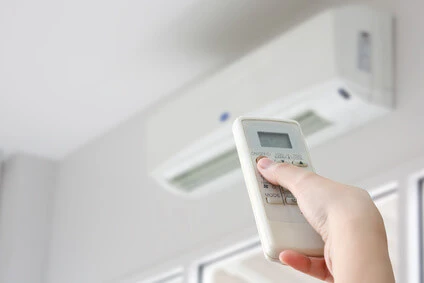

生涯払い続ける光熱費について②
こんにちは。富山で自然素材にこだわるホンモノの家、フジ創アイノスです。 ▼ 光熱費削減のためにすべき2つのこと 家の光熱費をカットするために2つのコトに取り組むようにすべきです。 1つは、 『出来るだけ家を小さくする』
続きを読む →FUJISOU AINOS JOURNAL
家づくりのこと、暮らしのこと。
日々の想いを、お伝えします。
家づくりについて 556件 ／ 新しい記事から 18・24ページ

こんにちは。富山で自然素材にこだわるホンモノの家、フジ創アイノスです。 ▼ 光熱費削減のためにすべき2つのこと 家の光熱費をカットするために2つのコトに取り組むようにすべきです。 1つは、 『出来るだけ家を小さくする』
続きを読む →こんにちは。富山で自然素材にこだわるホンモノの家、フジ創アイノスです。 "住宅ローン"は期間に終わりがあるのに対し、 "光熱費"には期間に終わりがありません。 一生涯掛かり続けることになる光熱費を、 いかにカットできるか
続きを読む →
こんにちは。富山で自然素材にこだわるホンモノの家、フジ創アイノスです。 夏真っただ中、皆様体調管理にお気を付けください。 夏の寝室の快適温度は25～28℃、快適湿度は50～60％といわれています。 人は夜寝ている間に体を
続きを読む →
こんにちは。富山で自然素材にこだわるホンモノの家、フジ創アイノスです。 前回iDeCoとつみたてNISAをご紹介しました。 例えば、あなたが30歳の共働きのご夫婦だとしたら、 ご主人には、iDeCoに毎月1万円、 つみた
続きを読む →こんにちは。富山で自然素材にこだわるホンモノの家、フジ創アイノスです。 家賃よりローンを上げるべきではないというお話の続きです。 もしいま賃貸にお住まいなら、いま払っている家賃の範囲内で 住宅ローンの返済額を設定すべきで
続きを読む →こんにちは。富山で自然素材にこだわるホンモノの家、フジ創アイノスです。 家を建てる誰もがたくさんのご要望をお持ちだと思いますが、 家はただ単に要望から出来上がるものではなく、 環境（敷地条件）に合わせ、予算を守りながら建
続きを読む →
こんにちは。富山で自然素材にこだわるホンモノの家、フジ創アイノスです。 YouTubeのフジ創アイノスチャンネルに、新しい動画がアップされました。 https://www.youtube.com/watch?v=Gfsl
続きを読む →
こんにちは。富山で自然素材にこだわるホンモノの家、フジ創アイノスです。 前回の続きで、こちらの吹抜けの家のメリットについてお話します。 まずこちらの住まいは、朝から夕方までずっと 吹抜けの窓から光が入り続けます。 光を遮
続きを読む →こんにちは。富山で自然素材にこだわるホンモノの家、フジ創アイノスです。 こちらのお家は、南側接道の 日当たりが良い土地に建っているのですが、 その道が比較的交通量が多いため、 単純に南に大きな窓をつくってしまうと、 外か
続きを読む →こんにちは。富山で自然素材にこだわるホンモノの家、フジ創アイノスです。 明るく開放感がある家にするためには、 カーテンを閉めなくてもいい窓をつくりながら、 窓から入ってくる光を家全体に拡散させないといけません。 例えば、
続きを読む →
こんにちは。富山で自然素材にこだわるホンモノの家、フジ創アイノスです。 マイホームブルーという言葉をご存じでしょうか。 マイホームの計画中や購入後に憂鬱な気持ちになることをいいます。 その原因は、住宅ローンへの不安、実際
続きを読む →
こんにちは。富山で自然素材にこだわるホンモノの家、フジ創アイノスです。 富山県は全国的にみて自然災害の少ない県です。 下のランキングは、2011年～2020年まで各都道府県の地震が起きた回数を調べたものです。 富山県は全
続きを読む →
こんにちは。富山で自然素材にこだわるホンモノの家、フジ創アイノスです。 昨日、富山市蓮町で地鎮祭が行われました。 地鎮祭は、家を建てる前にその土地の氏神を祀り、土地を使用する許可をいただく儀式です。 そして工事の安全と家
続きを読む →
こんにちは。富山で自然素材にこだわるホンモノの家、フジ創アイノスです。 高岡市内免で販売中の二棟のモデルハウスは、自然素材の漆喰、無垢を標準仕様としているだけでなく、 どちらも太陽光発電システムでエネルギーを創る光熱費0
続きを読む →
こんにちは。富山で自然素材にこだわるホンモノの家、フジ創アイノスです。 『自然素材の家』と聞くと、「高い」というイメージをお持ちの方が多いのではないでしょうか。 実はクオリティが同じ『自然素材の家』でも、建てる会社によっ
続きを読む →
こんにちは。富山で自然素材にこだわるホンモノの家、フジ創アイノスです。 戸建住宅のほとんどは木造で建てられています。 森で育った木材が伐り出されて、住宅の構造材となります。 自然が生み出した木材は、実は住宅の構造用の材料
続きを読む →こんにちは。富山で自然素材にこだわるホンモノの家、フジ創アイノスです。 多くの住宅会社は、床に板張りのフローリングを使っています。 このフローリングには、木の様に見えても自然素材とは言えない建材もあります。 例えば紙に木
続きを読む →
こんにちは。富山で自然素材にこだわるホンモノの家、フジ創アイノスです。 今回はフジ創アイノスのモデルハウスをご紹介します。 北欧風のアンティークな内装で、とてもかわいいお家です。 室内は無垢床、しっくい壁の自然素材でつく
続きを読む →
こんにちは。富山で自然素材にこだわるホンモノの家、フジ創アイノスです。 今日も高岡市は湿度90％を超えています。 体調管理に注意してくださいね。 湿度が高いと、気温が低くても蒸し暑く感じます。 人が暑い、寒いと感じる体感
続きを読む →
こんにちは。富山で自然素材にこだわるホンモノの家、フジ創アイノスです。 連日大雨で、とても蒸し暑いですね。 今日の高岡市の湿度は90％だそうです。 健康のため室内の湿度調節に気を付けましょう。 フジ創アイノスのつくる家の
続きを読む →
こんにちは。富山で自然素材にこだわるホンモノの家、フジ創アイノスです。 家の価格を抑えるためには、 出来るだけ家をコンパクトにすることが重要なポイントとなります。 とはいえいざマイホームを建てるとなると、 たくさんの希望
続きを読む →こんにちは。富山で自然素材にこだわるホンモノの家、フジ創アイノスです。 家づくりの際、住宅会社えらびはとても重要です。 ✔将来のことまで考えた資金計画をしてくれるのか ✔住宅ローンを銀行に丸投げしないか ✔家の価格につい
続きを読む →
こんにちは。富山で自然素材にこだわるホンモノの家、フジ創アイノスです。 今回は『土地探し』についてお伝えしていきます。 土地探しでは、 まず土地購入のためには一体どういう経費が 別途でかかるのかを把握することから始めまし
続きを読む →
こんにちは。富山で自然素材にこだわるホンモノの家、フジ創アイノスです。 前回は住宅ローンについてお話ししました。 続いて、家づくりにかかる諸経費について お伝えしていきますね。 諸経費とは、住宅ローンを借りる時の銀行経費
続きを読む →